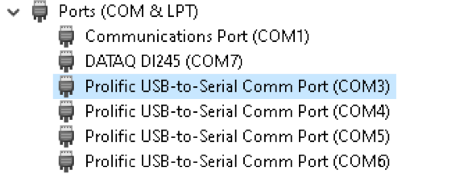

Quickstart Guide¶
After you have received your Cavro Centris syringe pump, follow instruction on how to set it up. After it is all set-up, secured and configured to work according to the manufacturer, connect it to the computer. Depending on the configuration of your syringe pump you might need RS-232 to USB adapter.
After the syringe pump is configured ensure it is visible by your operational system.
Windows
Got to “Device Manager” and find a new RS-232 (serial com) device connected.
{kind=link}
In the example above, you can see six rs232 (Serial Com devices) connected. Four are syringe pumps.
start command-line and start python (or ipython)
import syringe_pump
You can check the version of your syringe pump library
syringe_pump.__version__
You can check the version of your syringe pump library
from syringe_pump.driver import Driver
driver = Driver()
driver.available_ports() # will show all com ports available
['COM7','COM1','COM6','COM3','COM4','COM5'] #shows all available ports
Let us assume that we know that ports 3,4,5 and 6 are syringe pumps.